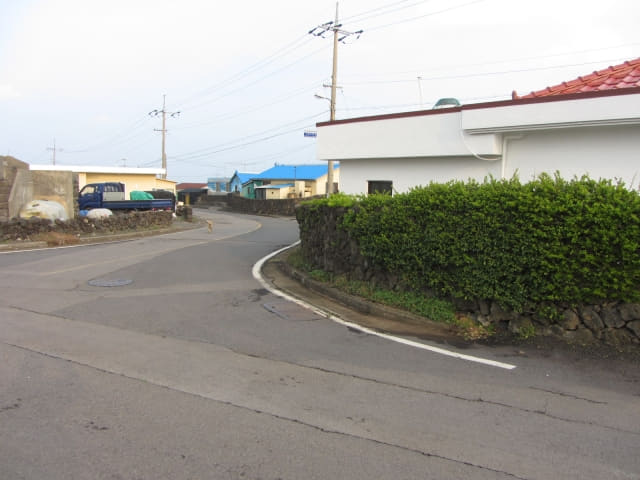

因不知道已經抵達了新川里壁畫村海濱邊陲的地方, 還繼續沿偶來3號小路一直向前走, 最後穿過山崖邊的叢林小徑, 來到離新川里很遠山崖下一段長長難走的亂石灘, 走了一會, 看看手錶, 差不多下午五時了, 不禁嚇了一跳, 離天黑只有約兩小時! 我們從表善海灘海邊用了三小時才走到這裡, 即使現在回程, 恐怕也不能在天黑前返回表善海灘海邊!

接著馬上宣佈取消往新川里壁畫村這行程, 匆匆掉頭循原路離開, 只希望在天黑前返回表善海灘海邊!
只管匆匆掉頭走, 也沒有心情或忘記拍照了!
走了一會, 發覺如果繼續循原路走, 路途頗為遙遠, 天黑前也不可能抵達表善海灘海邊, 隨時被困荒野。看看地圖, 高速公路就在步道的右邊, 和步道差不多平行排列, 離步道不太遠的, 高速公路那裡可以乘巴士或計程車返回表善市區, 那是唯一的希望。
決定了往高速公路, 便開始留意右邊的道路。經過了很多路口, 但感覺都不像通往高速公路的, 最主要是沒有路標, 心想如果是通往高速公路, 路口應該有路標的。
不停的往前跑, 這時天色漸漸明亮, 西面還露出橙色微弱的陽光, 好像在帶領我們。
很快便返回紅、白燈塔環抱的漁港 (新川里漁港), 來到一個路口, 停下來望望, 右面是一條比較寬闊的道路, 一直伸延往村莊內, 但可否通往高速公路呢?
正在猶豫之際, 溫柔的太陽從西面的雲層慢慢的鑽出來, 看著地上漸漸現出我們長長的影子, 暗示我們太陽快下山了, 要馬上作出決定!
比起先前經過的, 其實這道路已經是最佳的選擇了, 當然希望可以往高速公路, 如果不可以, 起碼可以向村民求助, 接著便戰戰兢兢的轉右沿馬路走進村莊。
莫非是 新川里壁畫村?
走了一會, 發覺沿途的房屋外牆都繪了很漂亮的壁畫, 開始懷疑莫非這裡便是新川里壁畫村…….。
幾乎肯定這裡是 新川里壁畫村
道路兩旁都是不同主題的彩色壁畫, 已經幾乎可以肯定這裡便是是新川里壁畫村; 更可以肯定河流是否已經給填平, 成為地下暗流, 所以走過了也不知道! (當然, 回家後打翻看照片才知道不是!)
真想不到竟然那麼意外, 那麼千辛萬苦和驚險才來到新川里壁畫村, 如果真的是新川里壁畫村, 也肯定村莊中的道路可以通往高速公路, 可以乘巴士返回表善的酒店, 頓時鬆了一口氣, 也不太急於離開, 可以慢慢遊覽。
沿村莊的步道一直走, 如沒有走錯, 穿過村莊便是高速公路。

沿村莊中的步道走了一會, 兩邊都是田野, 沒有房屋, 感覺好像走出了村莊, 但前面仍然沒有高速公路。
看看前面, 好像是另一個村落, 看見房旁有一條步道, 便繼續往前走。
穿過村莊, 迎面是一條頗為寬闊的馬路, 兩旁都是房屋, 應該不是高速公路吧!
